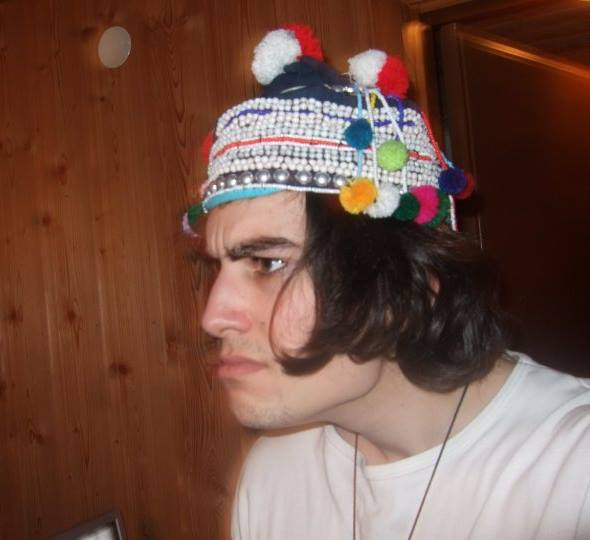

Här följer min första hemsida i vilken jag kommer presentera mig själv lite närmare!.
Jag som formgett detta htmldokument heter Adam och jag studerar för att nå en kandidatexamen inom datavetenskap. Jag har valt att studera inom detta område då jag är väldigt intresserad av datorer (läs: datorspel) och tycker att programmering verkar vara en spännande utmaning och därtill ett intressant yrke. Utan någon direkt tidigare erfarenhet av programmering är det en stor omställning att tänka i ett språk vars grammatik känns lika utstuderat ondsint som tyskans, men trots detta är det väldigt tillfredsställande när man väl löser ett problem.
Mina fritidsintressen är främst:
- Musik
- Allt ifrån 60talets folkmusik till nutidens Death Metal.
- Datorspel
- Stort fan av RPG(som Morrowind, Baldur's Gate med mera), FPS (som Quake och Counter Strike.)
- Böcker
- Gärna fantasy av Tolkien, Eddings och på senare tid George.R.R Martin
Mina positiva erfarenheter sedan jag kommit in på Linnéuniversitet.
- Umgänget
- Hamnat bland människor med liknande intressen och engagemang för att lära sig.
- Utmaningen
- Att få göra något som faktiskt är svårt och väldigt tillfredsställande att lyckas med.
- Miljön
- En miljö som präglas av seriösa lärare och krav utifrån rättvisa hjälpmedel i studierna.
Intressanta länkar kring musik och spel: